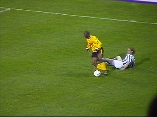

|
Roda JC - SC Heerenveen (0-1) 3 april 2004 |
L1-propaganda door het hele stadion....
Outlet???? - Toilet???
De RJC Fanclub verzorgde 1200 flyers met de
tekst van de nieuwe Rodasong.
Frida in Z16.
Enkele tientallen Friezen in het gastenvak en
naar verluidt 100 her en der.
De sfeeractie van West.
Redan = boppe????
Daar waar normaal een doek van Mechelen
wappert was vandaag een delegatie van Helmond
paraat!!!
Vonk pareert deze uitstekende kopkans.
Vicelich had hiervoor al gescoord maar het
doelpunt werd niet toegekend.

Kone won veel duels maar in het vervolg was
er helaas weinig succes.
Kone speelt zich vrij, drukt af, maar Vonk redt.
Hier gaat alweer een superkans verloren.
Nooit meer Foppe....
Redding op de lijn...
De notabele heer Cor Mac R. bereidt
zich reeds voor op het ere-terras bij
een wedstrijd van de Admirals (?)
In de 88e min. slaat het noodlot toe als Vayrinen
alleen op de keeper af kan: 0-1.
Rakker gaat ballen trappen.
Onze spelers zitten er doorheen. Ze hebben alles
gegeven, maar het zat niet mee.
Heerenveen gaat Europa in!
Yvonne met Kevin van Dessel. De spelers
kwamen erg laat deze keer. Er was bijna niemand
meer aanwezig in de Kick Off.
Links Elberkani, rechts Doemgens.
Naar de ROOTS VA KIRCHROA.
Het uitbundig getatoeëerde lichaam
van de burgemeester.
Ook mooi.
Meer foto's op Helmond Fanatics
en op: FeanFans